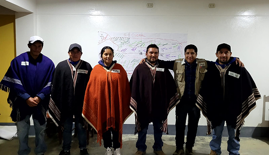
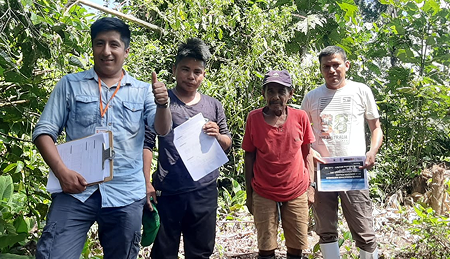
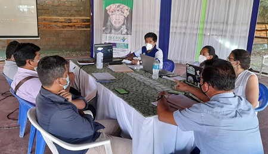
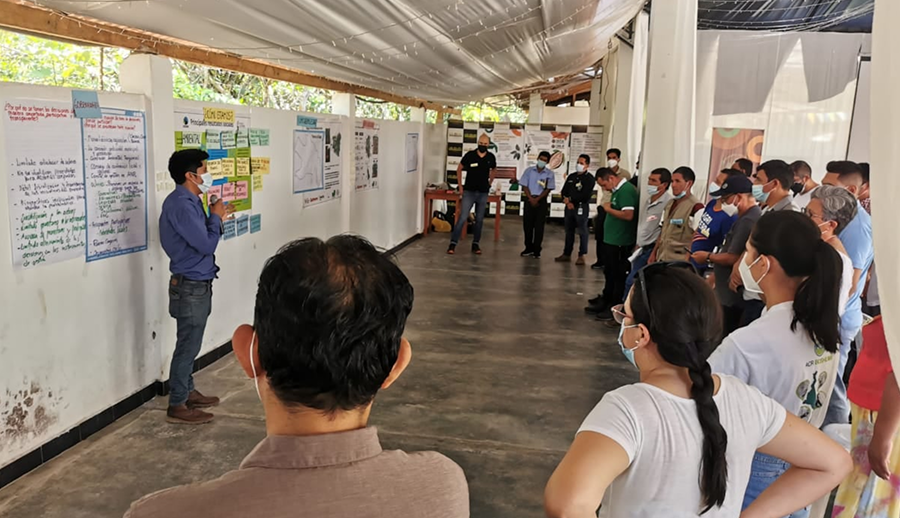
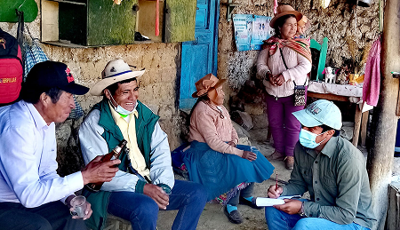

Vilca – RPNYC
Elaboración del Plan de Desarrollo Turístico Comunal de Vilca – Reserva Paisajística Nor Yauyos Cochas, región Lima.
Elaboración del Plan de Desarrollo Turístico Comunal de Vilca – Reserva Paisajística Nor Yauyos Cochas, región Lima.

Generación y sistematización de información primaria para la identificación de pueblos indígenas u originarios en las comunidades campesinas de Huancas, Cuemal, Luya Viejo, Trita, Goncha (provincias de Chachapoyas y Luya), región Amazonas.

Relacionamiento comunitario y elaboración del estudio socioeconómico en Codo del Pozuzo. "Proyecto Paisajes Productivos Sostenibles", región Huánuco.

Fortalecimiento de la Mesa PIACI y articulación de Planes de Vida en Loreto. Proyecto "Fortalecimiento de la Gobernanza en la Reserva Nacional Matsés y Reserva Indígena Yavarí Tapiche" en el mosaico Yavarí-Samiria, región Loreto.

Facilitación de talleres para generar una visión compartida del territorio en Shunte, Nuevo Progreso, Santa Lucía y Uchiza. "Proyecto Paisajes Sostenibles de Cacao", región San Martín.

Elaboración del diagnóstico turístico participativo rural en Colpar, Quilcas, región Junín.